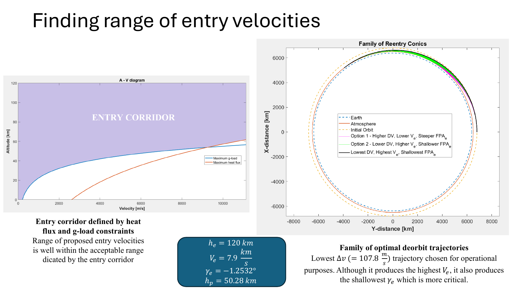
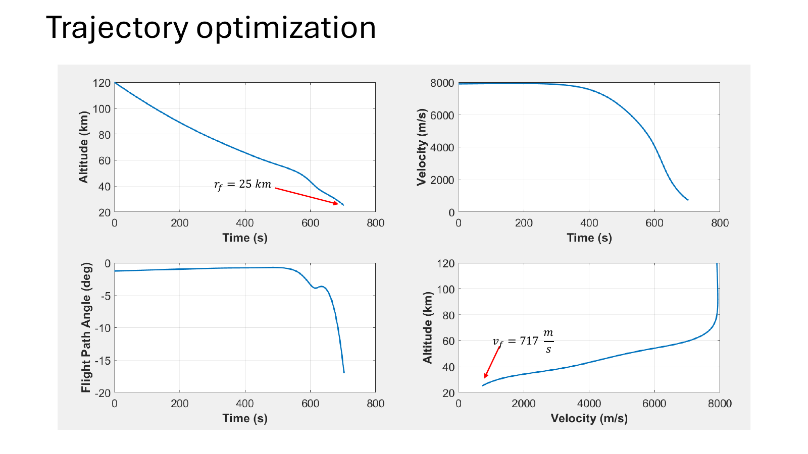
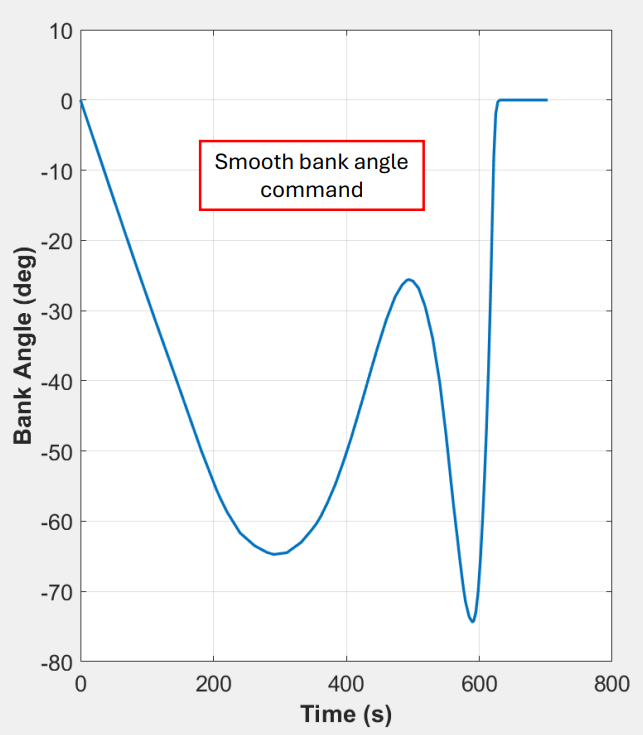
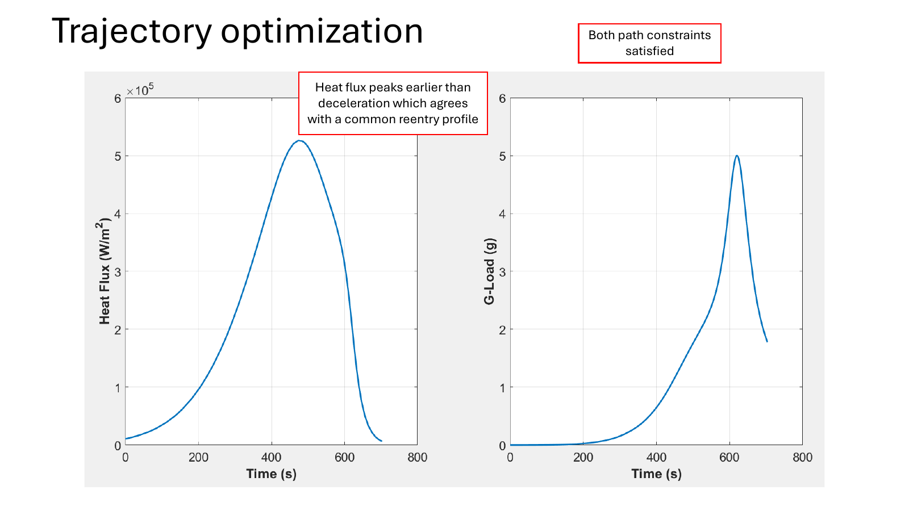

REENTRY · TRAJECTORY OPTIMIZATION
Atmospheric Reentry Trajectory Optimization
End-to-end capsule reentry design combining deorbit trajectory analysis, entry-corridor constraints, and sequential convex programming for the atmospheric segment.
Problem
Design a safe reentry from an ISS-like 420 km circular orbit to atmospheric entry, then guide the capsule through the atmosphere without exceeding 1.8 MW/m² heat flux or 5 g load before descent-system deployment.
My role
Developed the reentry optimization methodology, entry-corridor analysis, atmospheric dynamics, SCP implementation, and constraint verification.
Workflow
How the pieces fit together
The main project starts from a 420 km circular orbit, generates low-Δv deorbit trajectories, and identifies combinations of entry velocity and flight-path angle that remain inside heat-flux and g-load limits. The atmospheric segment is then optimized with the Sequential Convex Programming framework developed during my Purdue research.
SCP loop
Selected results




Outcome
Combined orbital mechanics, atmospheric flight, entry-corridor analysis, and SCP-based trajectory optimization into an end-to-end capsule reentry study with explicit thermal and load constraints.